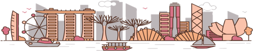

A Singapore Airlines Venture
Singapore
>
Singapore Highlights

Explore the best of Singapore
A bustling city-state in the heart of Southeast Asia, Singapore is known for being a melting pot of cultures, as well as its pervasive greenary amidst urban landscape.
Singapore Highlights
Do
Hidden Gems
See a different side of Singapore and discover all sorts of unique hidden gems
Hidden Gem
Drink
Rooftop Bars
Sip on amazing drinks and soak up epic views
Local Favourite
Couples